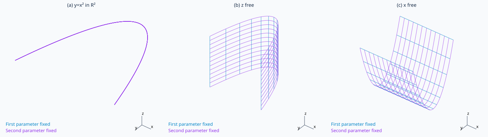

문제 요약
(a) \(y=x^2\)을 평면에서, (b) 공간에서 해석하고 (c) \(z=y^2\)의 공간곡면을 설명하라.

힌트. 정의와 주어진 조건을 식으로 옮겨 단계별로 계산한다.
해설.
(a) 평면에서는 위로 열린 포물선이다.
(b) z가 자유이므로 포물선을 z축 방향으로 늘인 주면이다. (c) x가 자유이므로 x축 평행 생성선을 가진 포물주면이다.
최종 답. (a) 포물선. (b) z축 평행 포물주면. (c) x축 평행 포물주면.
검산·주의점. 결과를 원래 식과 경계 조건에 대입해 확인한다.
Problem summary
Interpret (a) \(y=x^2\) in the plane, (b) in space, and (c) the surface \(z=y^2\).
Hint. Translate the definitions and conditions into equations, then work through them.
Solution.
(a) In the plane this is a parabola opening upward.
(b) Free z extends the parabola parallel to the z-axis. (c) Free x gives a parabolic cylinder with generators parallel to x.
Final answer. (a) Parabola. (b) Parabolic cylinder parallel to z. (c) Parabolic cylinder parallel to x.
Check and conditions. Substitute the result into the original equation and check the boundary conditions.